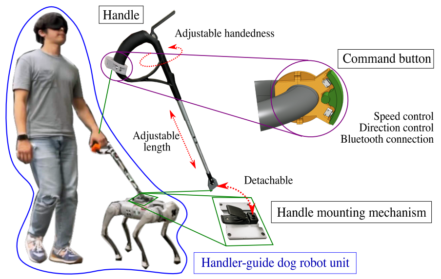
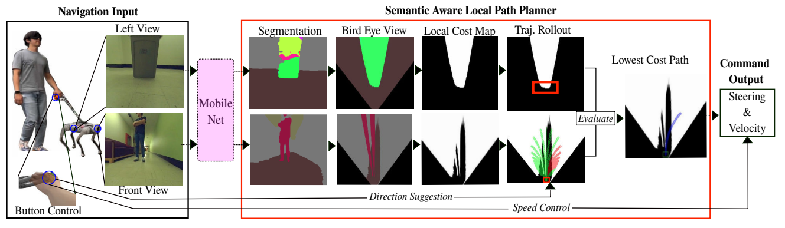

ICRA 2023
A robot guide dog has compelling advantages over animal guide dogs for its cost-effectiveness, potential for mass production, and low maintenance burden.
However, despite the long history of guide dog robot research, previous studies were conducted with little or no consideration of how the guide dog handler and the guide dog work as a team for navigation.
To develop a robotic guiding system that is genuinely beneficial to blind or visually impaired individuals, we performed qualitative research, including interviews with guide dog handlers and trainers and first-hand blindfold walking experiences with various guide dogs.
We build a collaborative indoor navigation scheme for a guide dog robot that includes preferred features such as speed and directional control. For collaborative navigation, we propose a semantic-aware local path planner that enables safe and efficient guiding work by utilizing semantic information about the environment and considering the handler's position and directional cues to determine the collision-free path.
We evaluate our integrated robotic system by testing guide blindfold walking in indoor settings and demonstrate guide dog-like navigation behavior by avoiding obstacles at typical gait speed (0.7 m/s).

Our guide dog robot interface is designed based on insights from interviews with guide dog handlers and trainers. The system includes a rigid harness handle that provides tactile feedback for direction and speed cues, somewhat similar to how handlers communicate with animal guide dogs. The handler can control walking speed through leash tension and indicate turning intentions through handle movements, enabling intuitive and collaborative navigation.

The semantic-aware local path planner utilizes segmentation masks to classify obstacles in the environment. The system considers the handler's position relative to the robot and generates collision-free paths that maintain safe distances from obstacles while following the handler's directional cues. This enables guide dog-like navigation behavior where the robot smoothly avoids obstacles while keeping the handler informed through the harness feedback.
@inproceedings{hwang2023system,
author = {Hwang, Hochul and Xia, Tim and Keita, Ibrahima and Suzuki, Ken and Biswas, Joydeep and Lee, Sunghoon Ivan and Kim, Donghyun},
title = {System Configuration and Navigation of a Guide Dog Robot: Toward Animal Guide Dog-Level Guiding Work},
booktitle = {2023 IEEE International Conference on Robotics and Automation (ICRA)},
year = {2023},
}